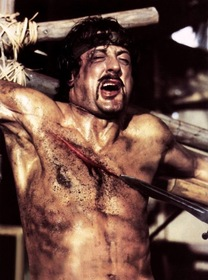

Мои любимые фильмы
Рэмбо:Первая кровь
Краткое содержание фильма
Главный герой настоящий эксперт военного дела. Он вынослив, погодные условия, боль просто на него не действуют. Рэмбо мастерски владеет всеми видами оружия, и готов до последней капли крови биться с врагом. Он привык убивать, и не ощущает сострадания, жалость или страх. Мужественный солдат выполнял особые поручения во времена войны во Вьетнаме. По возвращению Рэмбо не моет привыкнуть к мирной жизни, чувствует себя лишним и никому не нужным. Разукрасить унылые будни он решил путешествием. Странствуя по просторам Америки, наведывается к бывшим сослуживцам. Воспоминания – вот все, чем он живет. В небольшом провинциальном городе шериф принимает отважного солдата за бродягу. Полицейский ненавидит нищих и бездомных. По сфабрикованному им делу, Рэмбо отправляется за решетку, даже не догадываясь, что своим поступком накликал беду не только на себя, но и весь город. Непобедимый воин совершает побег и развязывает кровавую войну со стражами порядка и чиновниками.
Кадры из фильма
О фильме
| Год | 1982 |
|---|---|
| Страна | США |
| Жанр | Фильм, Боевик, Приключение |
| Режиссер | Тед Котчеф |
Большой куш
Краткое содержание фильма
Большой куш «Большой куш» – хитросплетенный криминальный фильм, действия которого разворачиваются вокруг украденного алмаза, поднявшего на уши все преступные элементы Лондона. Все начинается с четырехпалого Френки, который должен доставить добытую нелегальным путем драгоценность своему боссу Эви. На первый взгляд легкое задание обретает неожиданный поворот, когда гангстер решает между делом заглянуть на подпольный боксерский поединок, чтобы поднять немного денег на ставках. Этот опрометчивый поступок запускает череду курьезных и очень опасных событий, где каждый из колоритных участников – русский бандит, три незадачливых грабителя, цыганский боксер и угрюмый громила мафиози, пытаются присвоить большой куш себе.
Кадры из фильма
О фильме
| Год | 2000 |
|---|---|
| Страна | Великобритания |
| Жанр | Фильм, Криминал, Комедия, Боевик |
| Режиссер | Гай Ричи |
Такси
Краткое содержание фильма
Для Даниэля быстрая езда становится смыслом жизни. Не зря он пошел работать таксистом, чтобы реализовать смелые мечты о высоких скоростях, отличных машинах. Часто он нарушает существующие правила дорожного движения, помогая клиентам добираться до назначенного места вовремя. Неудивительно, что своей манерой вождения он привлекает внимание полицейских. Однажды его клиенткой становится Камилла Кутан – Корбадек. Женщина сетует, что ее сын Эмильен неуклюж, его постоянно преследует неудачи, а получить водительское удостоверение он не может вот уже 8 раз. Мать хочет, чтобы Даниэль и Эмильен подружились, возможно, водитель сможет помочь ему в уроках вождения. В реальности вскроются иные факты. Новый знакомый – нерасторопный сотрудник полиции, безответно влюбленный в коллегу Петру. Сейчас сотрудники его отдела проводят спецоперацию по поимке членов банды, перемещающихся на скоростных Мерседесах. На их счету немало ограбленных банков, а операция на живца, организованная комиссаром Жибером, проваливается, и всему виной неосторожность Эмильена. Последний намерен сделать все, чтобы реабилитироваться в глазах начальства, и Даниэль в этом поможет.
Кадры из фильма

О фильме
| Год | 1998 |
|---|---|
| Страна | Франция |
| Жанр | Фильм, Боевик, Комедия, Криминал |
| Режиссер | Жерар Пирес |